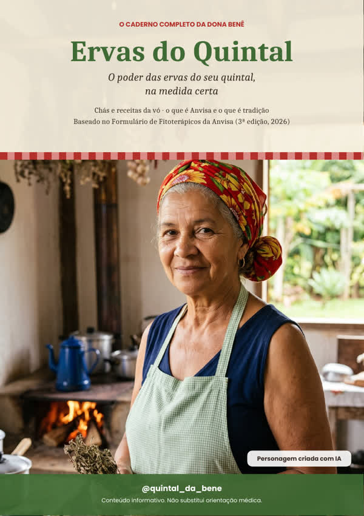
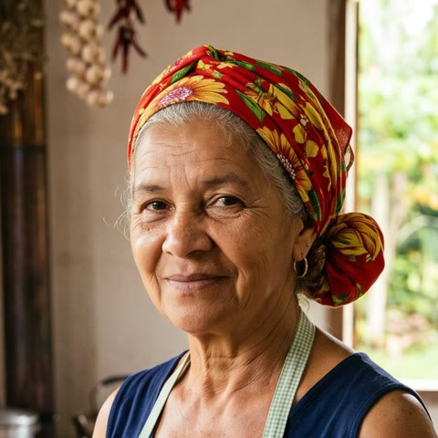

Ervas do Quintal: o caderno completo de remédios caseiros da Dona Benê, com o que é reconhecido pela Anvisa, o que é tradição de família e os cuidados de cada um.

Chá de boldo, xarope de cebola, mel com alho, gargarejo de sal, escalda-pés... Mas pouca gente sabe:

A Dona Benê é uma personagem criada com inteligência artificial, a avó das ervas do perfil @quintal_da_bene. Ela não é profissional de saúde: o conteúdo técnico segue o Formulário oficial da Anvisa.
Compra pela internet tem 7 dias de direito de arrependimento (Código de Defesa do Consumidor).